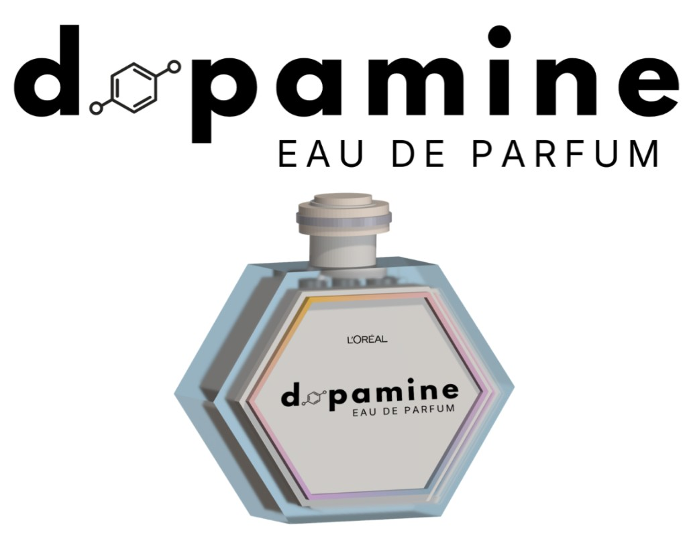

Dopamine
Designed an NFC-enabled luxury fragrance and companion app that transforms scent into an interactive, personalized digital experience. Led UX design, user flow, and concept development to connect physical product interactions with storytelling, mood-based personalization, and community engagement.
L’Oréal Brandstorm Requirements
The Challenge
Redesign how consumers connect with fragrance by creating a luxury scent experience that blends storytelling, sensory design, and technology beyond a traditional perfume.
The Goal
Develop a product and user journey that is personalized, immersive, and emotionally resonant, while remaining sustainable, inclusive, and scalable.
Innovation Areas
- Product Craftsmanship — New formats, ingredients, and sustainable packaging
- Tech & Science — Personalization through AI, data, and smart devices
- Experience Design — Immersive, multi-sensory journeys across physical and digital
- Community & Culture — Social engagement, influencers, and brand ecosystems
Problem & goals
Describe the problem space and what you set out to achieve.
Process
Walk through your research, ideation, and design process.
Outcomes
Share results, learnings, and impact.